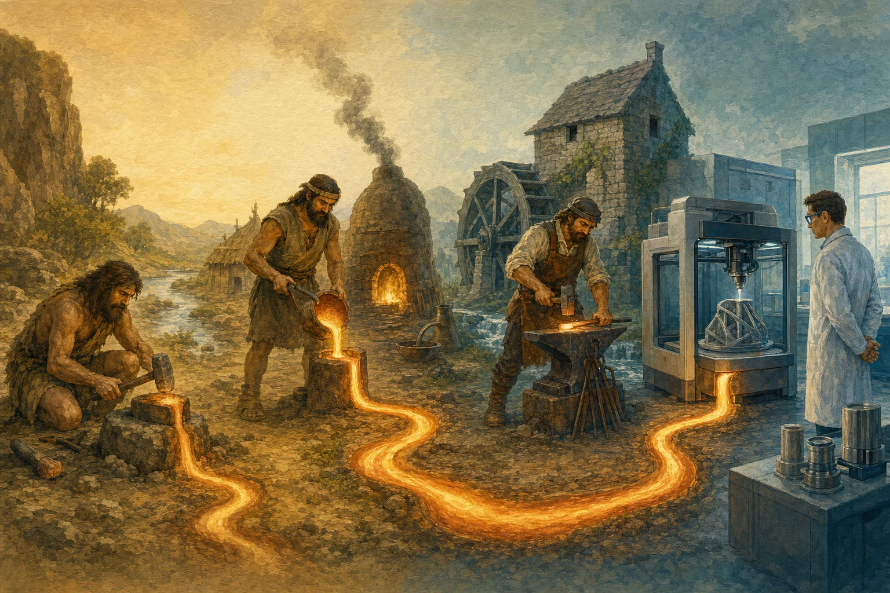
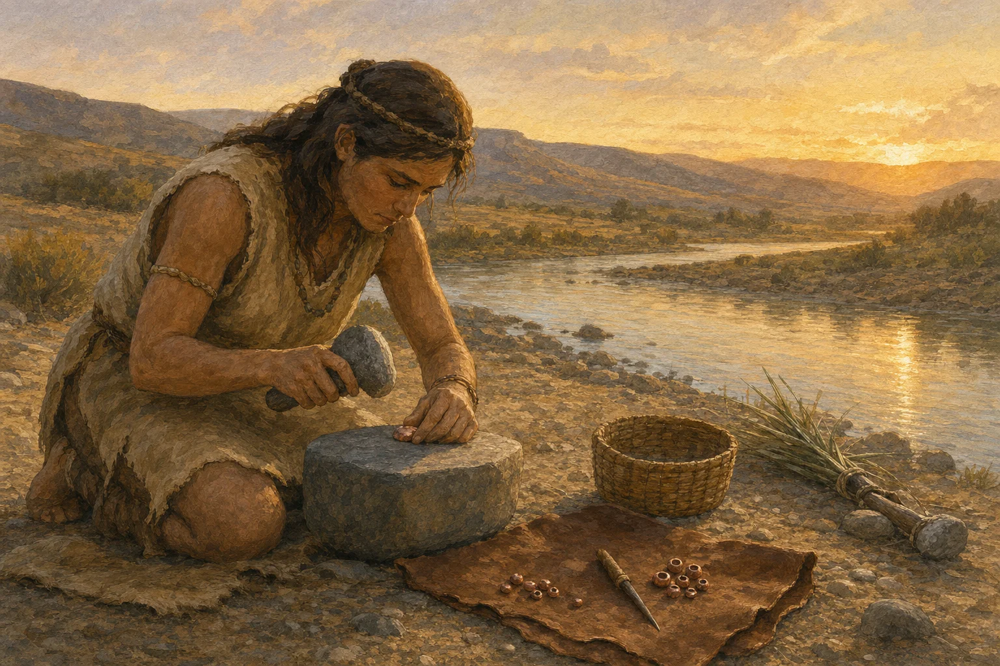
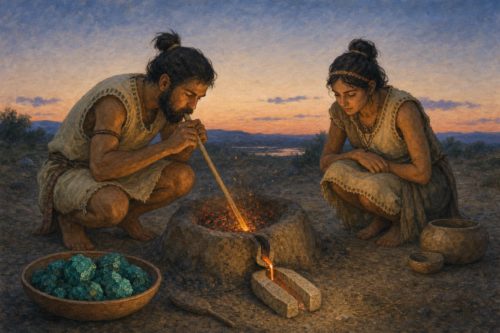
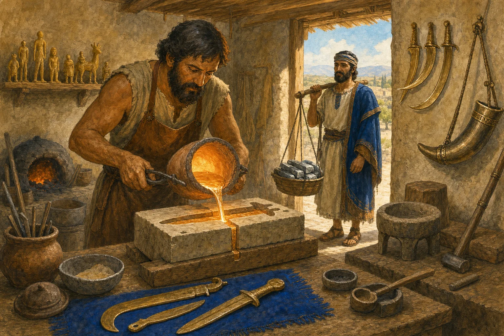
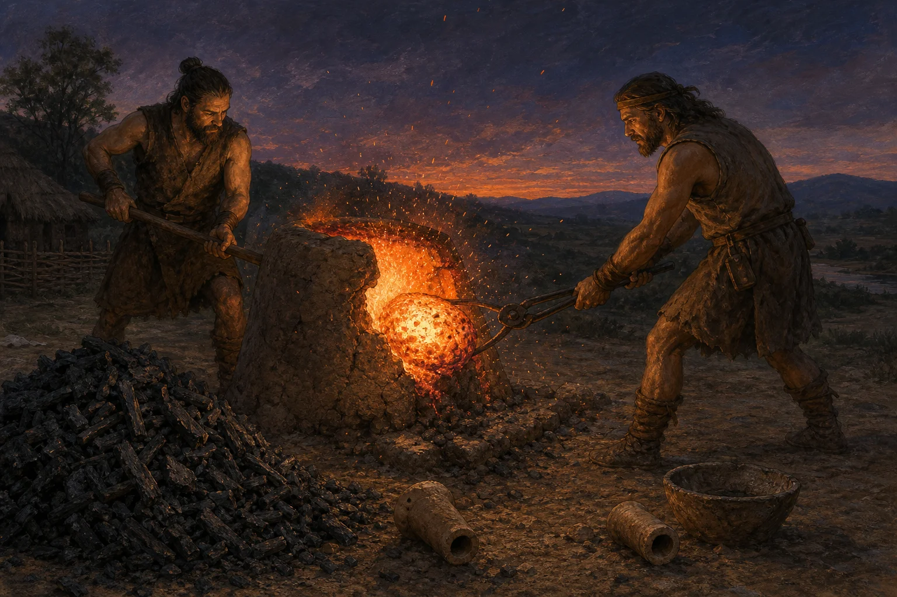
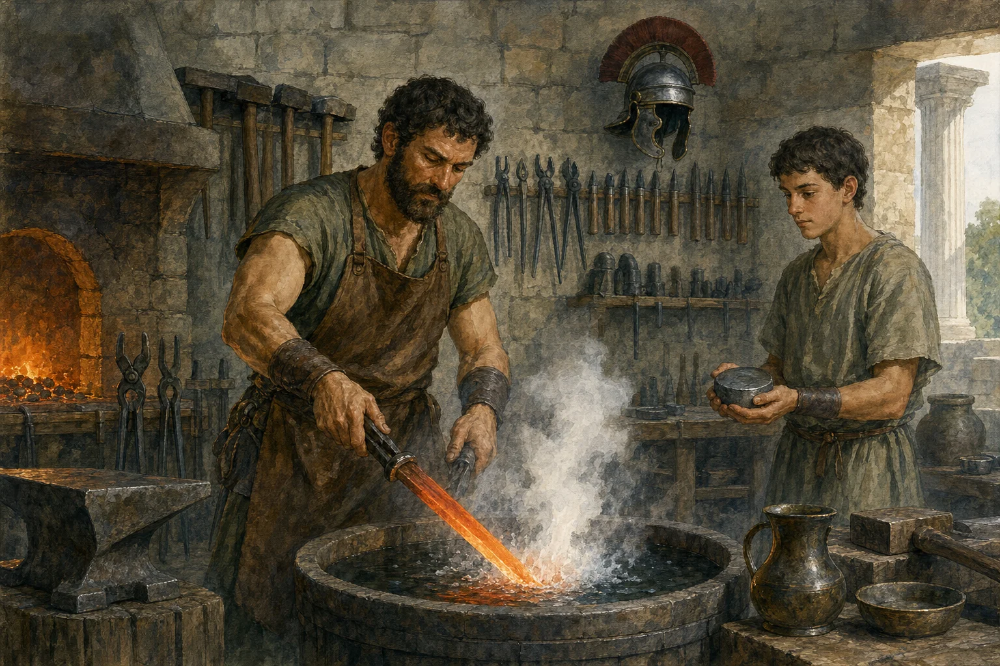
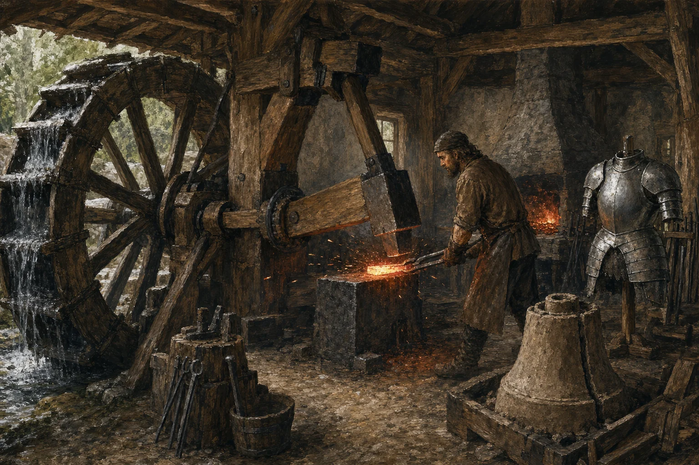
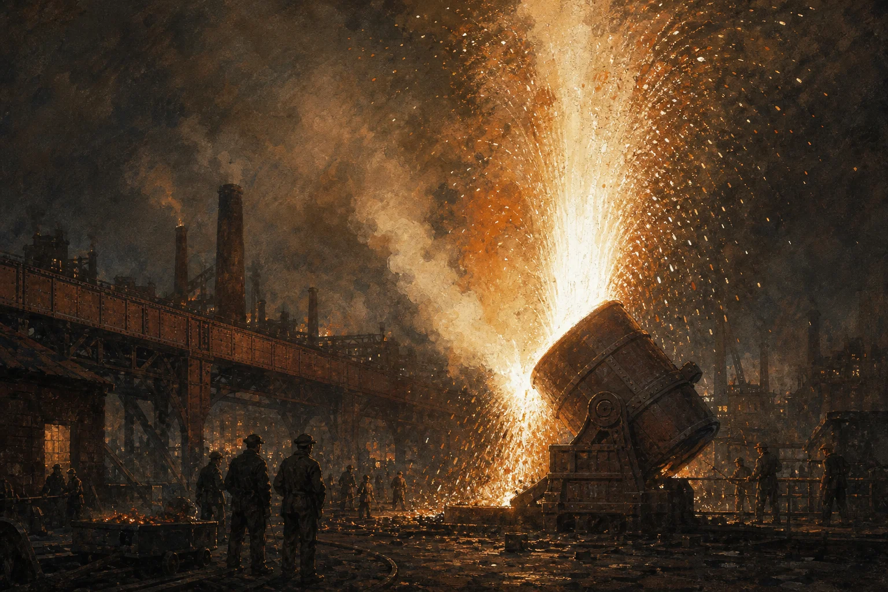
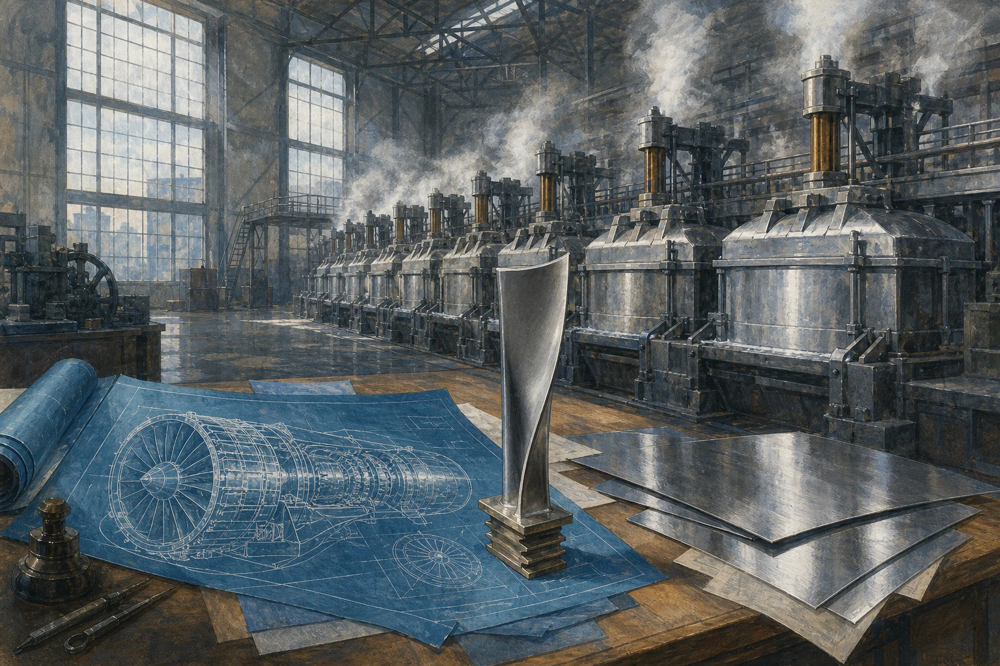
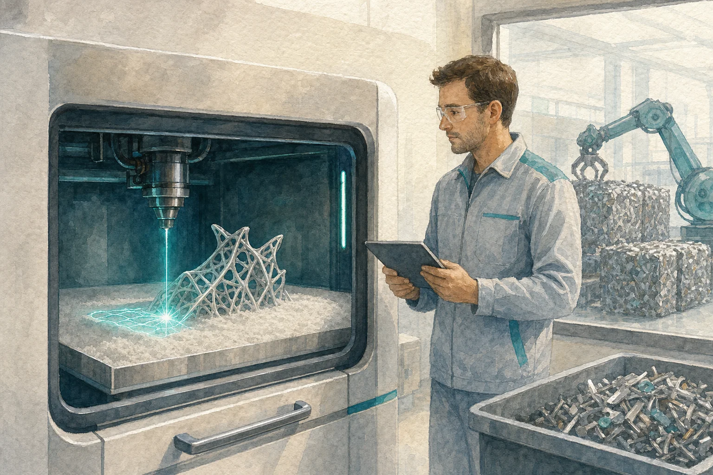

Eine Reise durch elftausend Jahre
Vom Feuer
geformt
Wie der Mensch lernte, das Metall zu zähmen — vom ersten kalt geklopften Kupferkorn am Flussufer bis zum Titanbauteil aus dem Laserdrucker. Neun Kapitel, chronologisch erzählt. Scroll dich durch die Zeit.
Die Reise beginnen
Kapitel 1um 9500 – 5000 v. Chr.
Kaltes Kupfer
Lange bevor irgendjemand Metall schmelzen konnte, lag es einfach da: Kupfer, rötlich schimmernde Klumpen in den Flussbetten Anatoliens.

Ein Stein, der nicht bricht, sondern sich biegt — den Menschen der Jungsteinzeit muss das wie Zauberei erschienen sein. Mit Hammersteinen klopften sie das weiche Metall kalt in Form: Perlen, Nadeln, kleine Haken. Kein Feuer, keine Schmelze — reines Handwerk mit einem wundersamen Material, das sich verhielt wie kein anderes.
Doch das kalte Schmieden hat eine Grenze: Mit jedem Schlag wird Kupfer härter und irgendwann rissig. Die Entdeckung, dass Feuer es wieder geschmeidig macht, war der erste Schritt in eine neue Welt — der Mensch begann, das Gefüge des Metalls selbst zu verändern, lange bevor er wusste, dass es so etwas gibt.
Kapitel 2um 5000 – 3300 v. Chr.
Das erste Schmelzfeuer
Auf dem Balkan wagten Menschen vor rund 7.000 Jahren den entscheidenden Schritt: Sie holten das Metall mit Feuer aus dem Stein — die war erfunden.

In Belovode, einer Siedlung der Vinča-Kultur im heutigen Serbien, fanden Archäologen die ältesten bekannten Spuren der Kupferverhüttung — rund 7.000 Jahre alt. Aus grünem Malachit wurde in kleinen, kaum blumentopfgroßen Öfen flüssiges Metall. Und flüssiges Metall lässt sich gießen: In Formen aus Stein und Ton entstanden Beile, Meißel und Schmuck in Serie.
Wie kostbar das neue Material war, zeigt der berühmteste Mann der Kupferzeit: Ötzi trug um 3300 v. Chr. ein Beil aus fast reinem Kupfer bei sich — vermutlich sein wertvollster Besitz und ein Zeichen von Rang.
Kapitel 3um 3300 – 1200 v. Chr.
Die Bronzezeit
Dann entdeckte jemand: Mischt man Kupfer mit einem Anteil Zinn, entsteht etwas Neues — härter, gießfreudiger, goldglänzend. Die erste bewusst geschaffene .

Bronze — etwa neun Teile Kupfer, ein Teil Zinn — veränderte alles. Sie ist deutlich härter als Kupfer und lässt sich hervorragend gießen. Aus ihr wurden Schwerter und Sicheln, Trompeten und Kessel, ganze Statuen. Weil das nötige Zinn nur an wenigen Orten der Welt vorkommt, spannten sich Handelsrouten über Kontinente; mit dem Metall reisten Ideen, Schrift und Macht.
Und Wissen: Die Himmelsscheibe von Nebra, um 1600 v. Chr. in Mitteldeutschland vergraben, gilt als älteste bekannte konkrete Himmelsdarstellung der Welt — gegossene Bronze, belegt mit Gold. Metall war nicht mehr nur Werkzeug. Es wurde Gedächtnis.
Kapitel 4um 1200 – 800 v. Chr.
Das Eisen
Eisenerz gibt es fast überall — aber Eisen schmilzt erst bei 1.538 Grad, unerreichbar für die Öfen der Antike. Der Ausweg hieß .

Im Rennofen aus Lehm wird Eisenerz mit Holzkohle nicht geschmolzen, sondern chemisch reduziert: Der Kohlenstoff entreißt dem Erz den Sauerstoff. Was bleibt, ist keine blanke Schmelze, sondern die Luppe — und aus ihr macht erst der Hammer brauchbares Eisen. Nicht der Gießer, der Schmied wurde zur Schlüsselfigur des neuen Zeitalters.
Als um 1200 v. Chr. die Handelsnetze der Bronzezeit zusammenbrachen und Zinn knapp wurde, war das lokal verfügbare Eisen zur Stelle. Es demokratisierte das Metall: Zum ersten Mal konnte sich fast jedes Dorf gute Äxte, Pflugscharen und Messer leisten.
Kapitel 5um 800 v. Chr. – 500 n. Chr.
Stahl der Antike
Reines Eisen ist weich. Erst mit einer Prise Kohlenstoff, aufgenommen aus der Holzkohle der Esse, wird daraus Stahl — auch wenn das damals niemand so nennen konnte.

Antike Schmiede beherrschten durch reine Erfahrung, was die Chemie erst im 19. Jahrhundert erklären konnte: Aufkohlen im Feuer, Härten im Wasser, Anlassen für die Zähigkeit. Drei Handgriffe, über Generationen verfeinert — der Unterschied zwischen einer Klinge, die schartig wird, und einer, die Jahrzehnte hält.
Rom wiederum machte Metall zur Massenware: Staatliche fabricae rüsteten ganze Legionen mit genormten Waffen und Werkzeugen aus, und in Minen wie Rio Tinto wurde Erz in industriellem Maßstab gefördert. Qualität aus Erfahrung, Menge aus Organisation — die Antike konnte beides.
Kapitel 6500 – 1500
Die Schmiede des Mittelalters
Im Mittelalter wurde die Schmiede zum Herzen jedes Dorfes — und das Wasserrad zum ersten Maschinenantrieb der Metallgeschichte.

Wasserräder hoben tonnenschwere Hämmer und pressten mannshohe Blasebälge — Arbeit, für die zuvor Dutzende Arme nötig waren. Zünfte ordneten das Wissen in Berufe: Waffenschmiede, Nagelschmiede, Kesselschmiede, jede Kunst mit eigenen Geheimnissen, Lehrjahren und Meisterstücken.
Und die Öfen wuchsen. Mit wassergetriebenem Gebläse wurden sie ab dem 12. Jahrhundert erstmals so heiß, dass Eisen flüssig aus ihnen floss: Der Hochofen war geboren. Sein Gusseisen füllte Formen zu Ofenplatten, Töpfen — und bald Kanonen. Am Ende des Mittelalters war Metall keine Kostbarkeit mehr, sondern Infrastruktur.
Kapitel 71709 – 1900
Die industrielle Revolution
1709 gelang es Abraham Darby, Eisen mit statt Holzkohle zu erschmelzen — der Anfang der Kettenreaktion, die unsere Welt aus Stahl baute.

Koks aus Steinkohle befreite die Eisenhütten von den Wäldern, und die Öfen wuchsen zu Giganten. Henry Corts Puddelverfahren (1784) rührte Roheisen mühsam zu schmiedbarem Eisen; dann kam 1856 Henry Bessemers Geniestreich, der Stahl von der Kostbarkeit zur Massenware machte: Binnen fünfzig Jahren fiel sein Preis auf etwa ein Sechstel.
Aus dem plötzlich billigen Stahl entstanden Schienen und Brücken, Dampfkessel und Schiffsrümpfe, die Skelette ganzer Städte. Zum ersten Mal formte nicht mehr der Schmied das Metall — sondern das Metall die Welt.
Kapitel 81886 – 2000
Das Jahrhundert der Legierungen
Das 20. Jahrhundert fragte nicht mehr nur „Wie mache ich Metall?", sondern: „Welches Metall erfinde ich für genau diesen Zweck?"

1886 entriegelten Charles Martin Hall und Paul Héroult — unabhängig voneinander, im selben Jahr, beide 22 Jahre alt — per Elektrolyse das Aluminium. Ein Metall, das kurz zuvor teurer war als Silber (der Legende nach ließ Napoleon III. nur Ehrengäste von Aluminiumtellern speisen), wurde zu Flugzeugrumpf und Alltagsfolie.
Dann ging es Schlag auf Schlag: rostfreier Stahl, Elektroschweißen statt Nieten, Titan für Luftfahrt und Medizin, Superlegierungen im Glutherz der Düsentriebwerke. Metallurgie wurde Wissenschaft — der Röntgenblick ins Kristallgitter ersetzte das Erfahrungswissen der Esse. Und mit dem Fließband wurde Metall so alltäglich, dass wir aufhörten, es zu bemerken.
Kapitel 92000 – heute
Präzision und Zukunft
Heute formt der Mensch Metall mit Licht: Laser schneiden Bleche wie Papier — und Drucker bauen Bauteile Schicht für Schicht aus Metallpulver auf.

CNC-Maschinen fräsen auf den tausendstel Millimeter, Laser schneiden und schweißen berührungslos, und die additive Fertigung kehrt das Prinzip des Werkzeugs um: Nicht mehr wegnehmen, sondern aufbauen — nur dort Material, wo Kräfte fließen. Leichter, fester, verschwendungsfreier.
Zugleich kehrt die älteste aller Fragen zurück: Woher nehmen? Die Antwort der Zukunft liegt im Kreislauf und im sauberen Feuer — Schrott wird Rohstoff, Wasserstoff ersetzt die Kohle. Nach 11.000 Jahren schließt sich der Kreis: Wieder verändert der Mensch sein Feuer, um das Metall zu verwandeln.
Elftausend Jahre — vom Klopfen am Flussufer bis zum Laserstrahl im Titanpulver. Und jedes Werkstück begann gleich: mit einem Menschen, der ein Stück Erde ins Feuer hielt und sich fragte, was daraus werden könnte.
Quellen und Weiterlesen
- Kupfersteinzeit · Bronzezeit · Eisenzeit — Wikipedia-Überblicke zu den Epochen
- Rennofen · Bessemer-Verfahren · Hall-Héroult-Prozess — Schlüsseltechniken
- Himmelsscheibe von Nebra — Landesmuseum für Vorgeschichte, Halle
- Ötzis Kupferbeil — Südtiroler Archäologiemuseum
- HYBRIT — fossilfreier Stahl mit Wasserstoff
- Deutsches Bergbau-Museum Bochum — Forschung zur Archäometallurgie
Illustrationen: mit Codex generierte Bilder im Stil handgemalter Gouache. Seite handgefertigt mit HTML, CSS und ein wenig JavaScript — ohne Framework, wie ein gutes Werkstück. 2026.